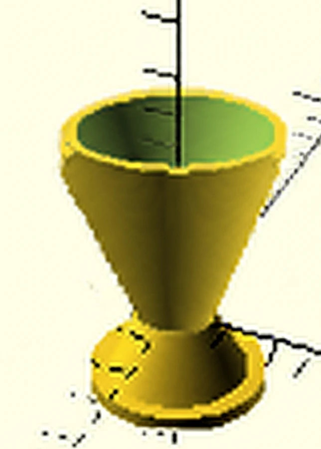

Bell Nozzle
A project I set myself: draw a bell nozzle in OpenSCAD, try to simulate it in SimFlow and OpenFOAM, and print it in PLA. The simulation never converged, so most of what I have to show is the debugging.
Why I started it
I had been reading about the engines and nozzles on different spacecraft, mostly because I wanted to know why they all look slightly different. At some point reading stopped being enough. I wanted to see whether I could design a bell nozzle myself, and whether I could make it better than the shapes I had been looking at.
I also picked it because it was harder than anything I had tried before. I want to keep doing this kind of work, and the only way I knew to find out if I could was to take one project all the way through. If it turned out well enough, I wanted something I could eventually show to people who do this for a living.
Learning the physics
Before I could draw anything I had to understand what sets the shape. A bell nozzle has a converging section, a throat where the flow goes sonic, and a diverging section where the gas keeps speeding up. That last part is the one that confused me at first. Below the throat, a narrowing passage speeds gas up. Above it, only a widening one does.
The relation that matters after that is the one between area ratio and exit Mach number for a given ratio of specific heats. That is what turns a target into a dimension. You pick the Mach number you want at the exit, and the physics tells you how much bigger the exit has to be than the throat.
I worked the sizing around a LOX/RP-1 case: an oxidiser to fuel ratio of 2.56, a 100 bar chamber at about 3615 K, expanding to 0.7 bar at roughly 3 km altitude, with a ratio of specific heats of 1.2 and a molecular weight of 22.65 g/mol. My target was an exit Mach number of 3.5. I also calculated a theoretical exit velocity of about 2,450 m/s at the time. I no longer have that worksheet, and reworking it from the numbers above gives me a different answer, so I treat that figure as a calculation I currently cannot reproduce rather than a result.
Turning it into geometry
I built the nozzle in OpenSCAD. The whole shape comes from a six-point profile, which is the exit, four points down the diverging wall, the throat, and the inlet. That profile gets revolved around the centreline with rotate_extrude(), then offset by a constant wall thickness so it is a shell instead of a solid.
Writing it as code rather than clicking it out in a CAD program meant I could move one point and see the whole contour change, and it let me hold the wall thickness and the overall scale as variables. The contour points themselves are typed in, so this is not a full nozzle generator. It is a profile I tuned by hand until the curve looked right.

The actual nozzle
Measured from the model I exported and printed.
- Throat radius
- 8.1 mm
- Exit radius
- 32.32 mm
- Overall height
- 84.48 mm
- Wall thickness
- 2.5 mm
- Area ratio
- 15.92
- Corresponding exit Mach
- About 3.6 (isentropic, γ = 1.2)
Checking the shape I actually built against the theory is the result I would defend. The exit radius divided by the throat radius is 3.99, so the area ratio is 15.92. Put that back through the area to Mach relation at a ratio of specific heats of 1.2 and it corresponds to an exit Mach number of about 3.6. That is a little past the 3.5 I was aiming for, because I placed the contour points by eye instead of solving for them.
Preparing the CFD model
A solver does not want the nozzle. It wants the gas inside it. So I made a second OpenSCAD model of just the internal flow path, with no walls, and exported that as the geometry to simulate.
That went into SimFlow, which is the interface I used to set up and run the case. The solver underneath it is OpenFOAM, and I used ParaView to look at the results. SimFlow's free version caps a mesh at 200,000 nodes on a single core, and that limit shaped everything that came after.
My simulation setup
- Interface
- SimFlow 5.0.68
- Solver
- OpenFOAM v2212
- Mesh
- Hex box, 40 × 40 × 60, about 96,000 cells, uniform grading
- Domain
- 70 × 70 × 95 mm around the flow volume
- Turbulence
- Laminar
- Inlet
- Pressure inlet, 100 bar total
The mesh is the weak point, and I can see that more clearly now than I could then. It is a uniform box wrapped around the nozzle rather than a mesh built around the nozzle. The cells are the same size at the throat as they are out in the corner of the domain, where nothing happens. The 0.7 bar exit target comes from my sizing notes. The 100 bar inlet I can still read straight off the case setup.
What kept failing
The early runs did not really run. OpenFOAM would abort inside the thermodynamics and report a temperature of about minus 1×1017 K, which is the solver saying the energy equation produced something meaningless and it will not carry on. That happened within one or two iterations.
At first I blamed the mesh, because it was obviously coarse. Then I went back through the pressure and temperature settings, then the boundary conditions, then the mesh again. Every change gave me another test case, and I ran a lot of them across one evening. Eventually I added a temperature limiter to stop the solver aborting outright, which kept the case alive much longer. A limiter is a way of surviving the symptom, though, not a fix for whatever was causing it.
How far each run got
Reconstructed from screenshots I took as I went.
- 2 April, 22:23
- Aborted at iteration 2, fatal error in the temperature solve
- 2 April, 22:28
- Same abort, with 1000 iterations requested
- 2 April, 23:03
- Iteration 1, laminar case, no limiters
- 2 April, 23:19
- Iteration 2, continuity error already growing
- 2 April, 23:29
- Iteration 20, with the temperature limiter in place
- 3 April, 16:49
- Iteration 24, the furthest any run got, then it diverged
Those six are the runs I happened to capture, out of a lot more. What they show is the shape of the evening. I went from cases that died on contact to cases that survived into the twenties, without ever reaching an answer.
What the evidence supports
I want to be exact here, because it would be easy to imply more than I have. The simulation did not produce a valid flow solution. No velocity, Mach, or pressure field was ever written to disk. When I open the case in ParaView the only time step available is zero, which is the mesh before anything was solved. I did not numerically confirm choking at the throat, I did not confirm supersonic expansion, and I have nothing that would let me say whether the nozzle was over or under expanded.
In the final run the solver reported a continuity error of order 1049 and pressures of order 1095, both positive and negative. Those are not small errors. They are the numbers a case produces on its way to falling apart. The residual plot from that run shows velocity and enthalpy flattening out around 10-2 while the pressure residual sits at 1, which is a case that is not converging rather than one that is nearly there.
So the CFD here is a record of a setup and a failure, not a validation of the design. The geometry check earlier on this page is the only quantitative result I would stand behind.
Printing it
The printing question is which way up. Printed the obvious way, inlet down, the inside of the bell is an overhang, so the slicer fills the expansion section with sacrificial support. Every contact point then leaves a mark on the surface the gas would flow along.
Turning the part over solves it. With the exit face flat on the plate, the wall never exceeds its own self-supporting angle, so nothing has to be built inside the bell. There is still a raft under the part where it meets the bed. What the orientation avoids is support material against the internal curve.
- Printer
- Entina TINA2S (FDM)
- Material
- PLA
- Layer height
- 0.2 mm, 422 layers
- Infill
- 10%
- Print time
- 4 h 42 min, 11.2 m of filament
- Orientation
- Inverted, exit face on the build plate
The printed part
The nozzle printed and I have it. Holding it tells you things a render does not. The wall is thinner than it looks on screen, the throat is smaller than you expect, and the layer lines run in visible rings around the bell. Those rings are exactly the surface finish question that decides whether printing a shape like this is worth doing at all.
A photograph of the finished part is being added from my project archive.
What I would change
Mesh the nozzle, not the box. The cells need to be small where the flow does something, through the throat and along the wall, and they can be much larger everywhere else. That is also the only way to stay under a node limit.
Check that the inlet, outlet, and wall are genuinely separate patches with the right condition on each, instead of assuming they are. Bring the case up gradually rather than starting a 100 bar inlet from ambient. Run it transient first, so the flow can establish before I ask a steady-state solver for an answer.
Then the test of whether any of that worked is simple. Produce a Mach field and look at it. I would not call the nozzle simulated until I can.
What I learned
A solver failing is information. The first few aborts told me nothing except that something was wrong. By the end I could read the error, guess which part of the setup it pointed at, and change one thing to test it. That loop is most of what I got out of this project.
I also learned to check my own geometry against the theory instead of trusting that I drew what I meant to draw. That is how I know the shape I printed is closer to Mach 3.6 than to the 3.5 I set out for. And I learned how fast a simulation will hand you a confident looking picture of nothing at all.